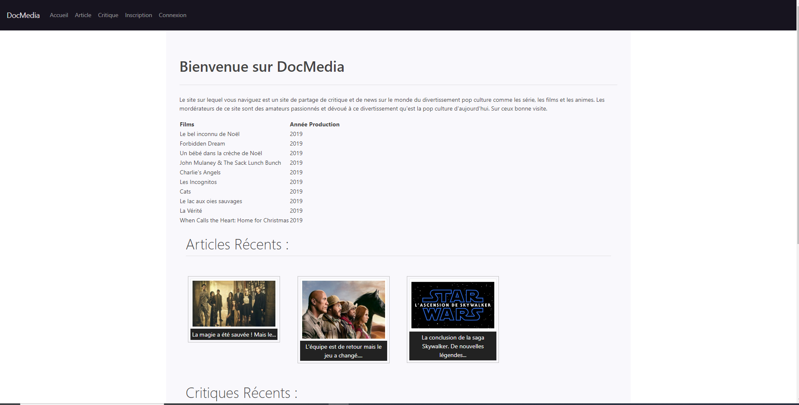

Bienvenue sur mon CV numérique.
Je suis François-Jordan Quénard, je suis en recherche active en tant que Concepteur Développeur d'Application(CDA). Ayant terminer mon alternance à La MANU pour la formation CDA, je suis en recherche d'un CDD ou CDI
pour participer au développement de projet numérique car le développement informatique est une passion que
j'ai développé pendant ma formation en alternance chez
Openclassrooms à travers divers projets que vous trouverez dans l'onglet
Projet avec laquelle j'ai travaillé en alternance et aussi quelques projets que je développerais et publierais sur l'onglet Projet personnel.
Mon parcours scolaire et professionnelle est cité en dessous pour me contacter n'hésiter pas à aller dans l'onglet contact et à m'envoyer un message avec vos coordonnées
si vous voulez qu'on discute lors d'un entretien.
Formation
2021-2022 Certificat de réalisation du TP Concepteur Développeur d'Application à l'école des métiers numérique La Manu à La MANU
11 Février 2021 Développeur.NET à La MANU
14 Décembre 2018 - 14 Décembre 2019 Développeur Web Titre RNCP Niveau III
en alternance à Openclassrooms
Mars 2018 - Juin 2018 Intégrateur en réalisation d’applications web Titre
RNCP Niveau III à Openclassrooms
Septembre 2012 - Juillet 2013 BAC Pro Mécanicien Système Cellule au Lycée Alexandre-Denis
Expérience
OEIL DU JOUR | Mai 2021-Mai 2022
Viroflay
Intégration et Mise à jour des produits sur le site via isialis
et/ou Prestashop.
Administration du site via l’admin Prestashop.
Veille, Rapport de bug et maintenance du site en front en
Backend.
Production de commande sur Isialis.
Préparation de la migration des données vers le nouveau site Magento.
Création d’un annuaire de famille avec les codes pour Isialis.
Création d’un script PHP pour l’actualisation de la base de données de l’outil PLV
Projet 1 : Intégrez la maquette du site d'une agence web
Le but du projet était de s'occuper de la refont du site qui se faisait vieillissant en intégrant les
maquettes que les designers nous ont données en HTML/CSS et en applliquant ces critères :
Coder la structure d'une page web en HTML
Présenter une réalisation de manière professionnelle
Coder la présentation d'une page web en CSS
Définir le contenu d'une page web à partir d'une maquette
Gérer la responsivité avec les Media Queries
Coder la structure d'une page web en HTML
Si vous voulez voir le résultat vous pouvez cliquez sur l'image ci-dessus ou ce lien :
Webagency
Projet 2 : Créez un site en personnalisant un thème WordPress
L'objectif du projet était de créer un site web pour montré l'actualité et les activités que proposait
la ville de Strasbourg et un formulaire de contact pour les contacter,
il a été programmé en wordpress 5 à partir des critères ci-dessous :
Adapter l'affichage en fonction de la taille de l'écran
Créer une animation avec CSS3
Assurer la cohérence graphique du site
Définir la structure de navigation du site
Appliquer les principes de SEO dans le code HTML
Assurer l'accessibilité du site aux différents types d'utilisateurs
si vous voulez en voir plus vous pouvez cliquer sur
l'image ci-dessus ou ce lien ci dessous :
Office de
Strasbourg
Projet 3 : Concevez une carte interactive de location de vélos
Pour ce projet, je devais créer un site de location de vélo pour la ville de Créteil en javascript avec
un formulaire à remplir et signer sur le canvas, en respectant ces critères :
Faire des requêtes HTTP en langage JavaScript
Créer des objets simples en JavaScript, contenant des méthodes et des propriétés
Récupérer des données de formulaires en utilisant le langage JavaScript
Ecrire un code source lisible
Si vous voulez voir le résultat vous pouvez cliquez sur l'image ci-dessus ou ce lien :
Gogovélo
Projet 4 : Concevoir un blog pour un écrivain
Sur ce projet, je devais créer un blog en PHP pour un écrivain Jean Fortoche pour son livre un billet
pour l'Alaska avec ces critères :
Construire une base de données
Récupérer la saisie d’un formulaire utilisateur en langage PHP
Analyser les données utilisées par le site ou l’application
Créer un site Internet, de sa conception à sa livraison
Insérer ou modifier les données d’une base
Organiser le code en langage PHP
Si vous voulez voir le résultat vous pouvez cliquez sur l'image ci-dessus ou ce lien :
blogfortoche
Projet 5 : Effectuez un stage OU présentez librement un projet personnel

Dans projet personnel, j'ai décidé de faire un site d'actu et de critique sur les films, séries et animes
avec le langage html/css/javascript et php mais aussi la framework symfony et le langage twig pour cela
j'ai respecter des critères :
Découper, assembler et programmer les pages
Intégrer les contenus et les effets graphiques
Organiser et manipuler les données
Organiser le code en langage PHP
Sécuriser l'application
Stocker et récupérer les informations dans la base de données en langage SQL
Utiliser les langages de développement web dans un projet personnel
Assurer la conformité de votre application avec les langages PHP, JavaScript, HTML5 et CSS
Si vous voulez voir le résultat vous pouvez cliquez sur l'image ci-dessus ou ce lien :
DocMedia
Projet Webagency en XHTML
Ce site a été configuré en XHTML si vous voulez le voir vous pouvez cliquer sur l'image ci-dessus ou le
lien ci-dessous il respecte les même critères que l'autre site Webagency dont les critères ci-dessous :
Coder la structure d'une page web en HTML
Présenter une réalisation de manière professionnelle
Coder la présentation d'une page web en CSS
Définir le contenu d'une page web à partir d'une maquette